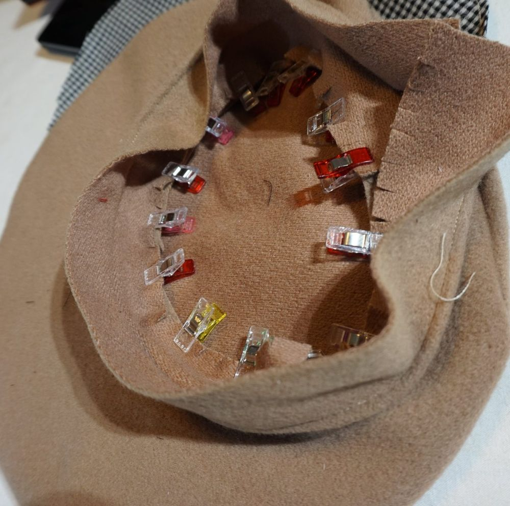
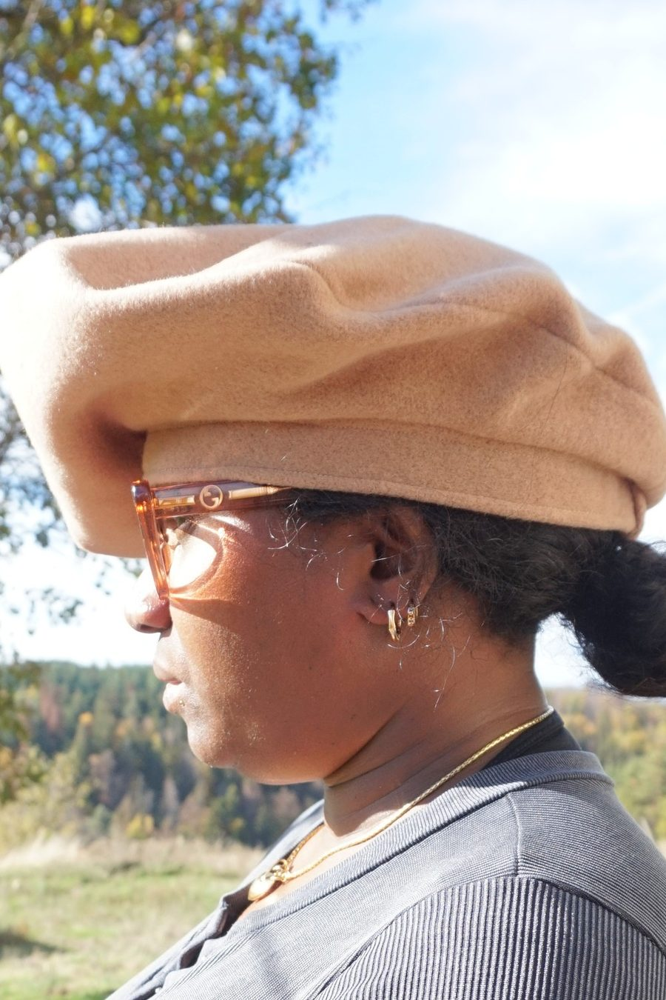
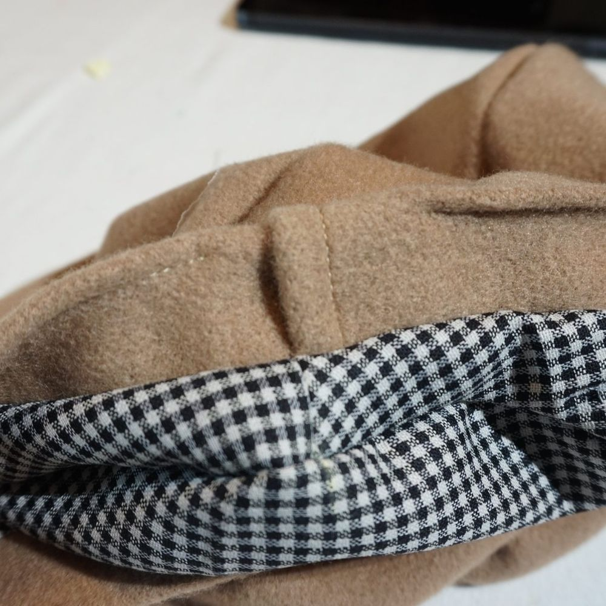
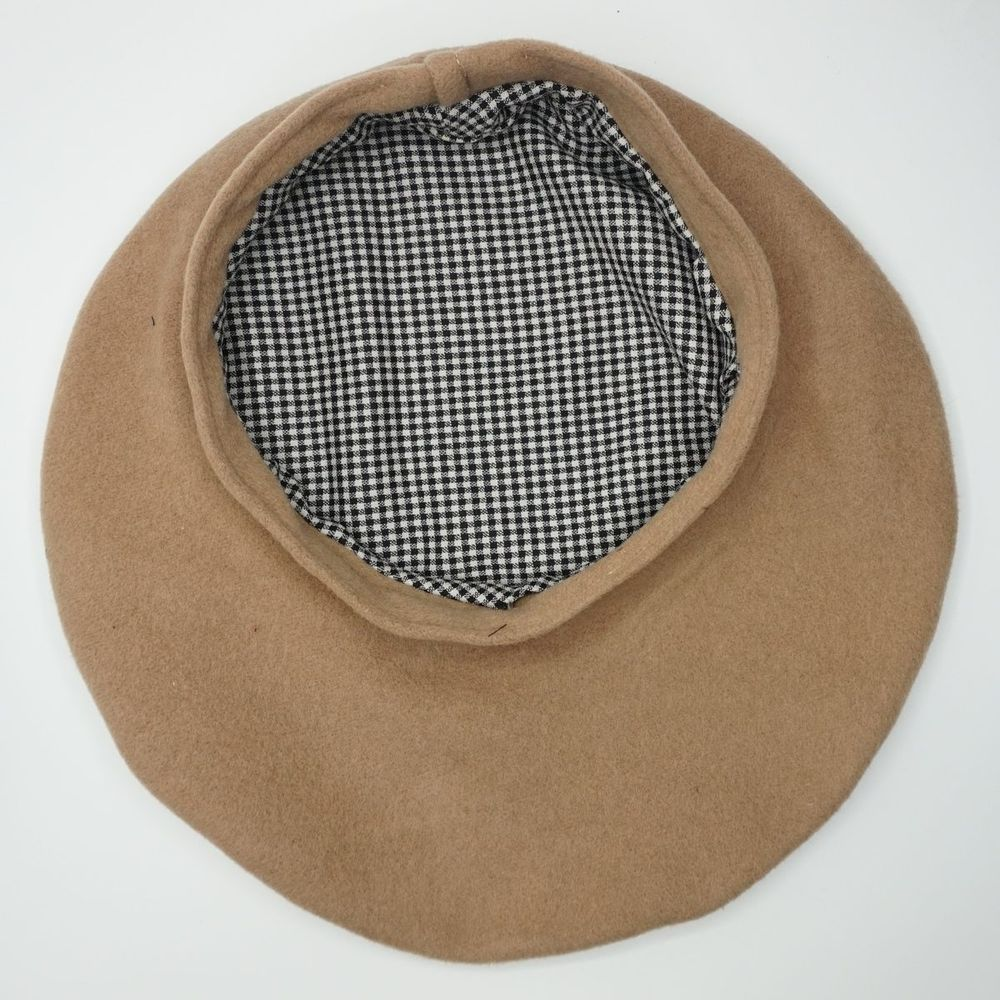

Basque beret guide
A made-to-measure unisex Basque beret (French beret, for men and women), centred or asymmetric, sewn from three pieces (the crown, the side and the headband) and fully lined.
Centred or asymmetric?
This beret can be centred or asymmetric, as you prefer. Many beret wearers like to wear it to one side, and an off-centre beret makes this easier. Adjust the asymmetry with the “Offset” setting. To help you choose, the schematic cross-section, updated live, gives you an idea of the shape of the finished beret.
Dimensions
For an adult, the standard diameter is 30 cm. Be careful: if you go significantly above this value, your beret will look more like a pizza maker's dough disc than a beret. It is up to you.
A height of 3 cm is the standard. You can increase it, which is particularly useful for people with thick hair.
An ease of 1 cm is the standard. How you use this ease depends in particular on the thickness of the chosen fabric and on your hairstyle.
Headband
The pattern offers two versions of the headband, chosen with the “Headband type” setting: a one-piece headband, or a two-piece headband to be joined. Use the latter if you are sensitive to the main fabric (wool, for instance) touching the skin of your forehead: one of the two strips is then cut in a secondary fabric. Otherwise, it brings nothing more.
Fabric
Berets are traditionally made from wool felt or boiled wool. A light, drapey wool gives a softer beret, while a thick coating fabric gives a much more structured look. A medium or heavy velvet also works. It is up to you. With velvet, the shade varies slightly around the beret depending on the direction of the pile: this is normal.
For the lining, choose an ordinary lining fabric or a fabric of your choice. It must be light. The lining also makes the beret more comfortable: wool can scratch the forehead.
1. Cutting
Cut out the pieces and mark the assembly marks: in the main fabric, one crown, one side and one headband (in one or two pieces; in that case, the second piece in the secondary fabric, lining or other); in the lining, one crown and one side.
2. Outer beret
- Join the ends of the side.
- Press the seam, flattening the allowances on each side.
- Headband: fold the headband in half, wrong sides together (two-piece headband: join one long edge, leave the other open, turn right side out and press the fold), fold one end over by 2 cm and press the fold with the iron. Topstitch the headband along the fold, leaving 1.5 cm free at one end and 2 cm at the other.
- Join the crown and the side, right sides together. Sew, then trim the excess with scissors all along the seam.

Crown and side joined, excess trimmed - Turn and press the seam flat.
- Clip the edge of one side of the headband to make it easier to attach to the side (be careful not to cut beyond the seam allowance).
- Join the side to one face of the headband, right sides together: start at the side's joining seam, letting the headband extend 1 cm beyond it, and sew, leaving 3 cm free on each side of this joint to make finishing the headband easier.

Side and headband joined, held with clips - Turn and press this seam flat.
- Fold the end of the headband inwards: the fold you made earlier must cover the centimetre that you let extend beyond the joining seam.

Headband end folded over the joint - Sew the two ends of the headband together, at right angles to the headband. One face of the headband stays free for attaching the lining.
- Continue the overcast stitch along the bottom of the headband over the part left free, so that the overcast stitch runs along the whole bottom of the headband.
3. Lining
- Join the ends of the side.
- Press the seam, flattening the allowances on each side.
- Join the crown and the side, right sides together. Sew, then trim the excess with scissors all along the seam.
4. Joining the outer beret and the lining
- Place the two pieces right sides together, pin, then sew them together, leaving an opening of about 8 cm.

Outer beret and lining, right sides together - Turn the pieces right side out through the opening.

Turning right side out through the opening - Press the seam flat.
- Sew a finishing seam all along the top of the headband, joining both faces of the headband and the lining.
- With a few discreet hand stitches in the crown-to-side seam, secure the lining to the inside of the beret.
The finished beret



